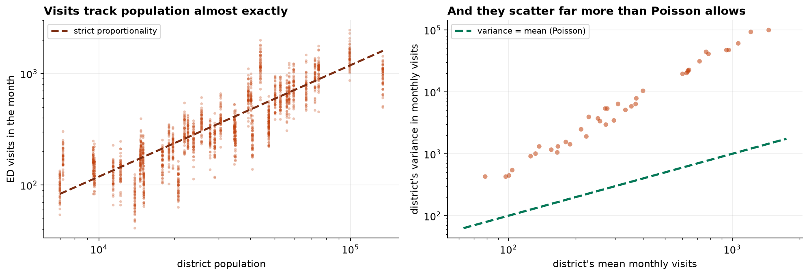

This part closes with the model that fails for a reason none of the previous three did: the outcome is a count, and counts have a variance of their own.
- Setting
- Forty health districts observed monthly for four years, 1,884 usable district-months, with population, a deprivation index, family doctors per 10,000 residents, an urban flag and a count of emergency department visits.
- The question
- Which district characteristics are associated with the rate of emergency visits, and how much does an extra family doctor per 10,000 residents matter?
- Why it matters
- The answer allocates money between districts. It has to be a statement about rates rather than about how many people live somewhere, and its intervals have to be wide enough to be honest.
- What we do
- Fit Poisson because it is the natural model for a count, show what happens without the population offset, test the assumption Poisson actually makes, and compare three remedies on the only criterion that settles it: whether their intervals contain the true values.
Without the offset, more family doctors comes with more visits, a rate ratio of 1.012. With it, 0.909. The sign flips. And Poisson's variance assumption is violated by a factor of 42, which leaves its 95 percent intervals containing the true value once in five times.
The Offset, and the Sign It Reverses
The outcome is a count, so ordinary regression is the wrong tool: counts are bounded below at zero, are not continuous, and have a variance tied to their mean. Poisson regression is the natural starting point, and the natural way to write it down is already wrong.

| Rate ratio for | No offset | With log(population) | Truth |
|---|---|---|---|
| One SD more deprived | 1.3774 | 1.2620 | 1.2032 |
| One more GP per 10,000 | 1.0120 | 0.9088 | 0.9493 |
| Urban rather than rural | 1.0869 | 1.0499 | 1.1008 |
| A winter month | 1.1659 | 1.1710 | 1.1526 |
Look at the second row. Without the offset, one more family doctor per 10,000 residents comes with slightly more emergency visits. With the offset it comes with nine percent fewer. The sign flips, and the reason has nothing to do with health care: districts here differ in population by a factor of nineteen, and a model without the offset is a model of how many people live somewhere. Every coefficient in it is contaminated by whatever else correlates with size.
Adding the offset changes the question from "how many visits" to "what rate of visits", which is what was asked and what a commissioner can act on.
The Assumption Poisson Actually Makes
Poisson makes exactly one strong claim: the variance equals the mean. Real administrative counts almost never oblige, and two lines of code settle it.
This is overdispersion, and it is severe. The coefficients survive it more or less intact; the standard errors do not. A model reporting intervals four times too narrow does not look broken. It looks unusually conclusive.
![Left: each district's mean monthly visit count against its variance on log scales. All forty points lie close to a solid negative binomial curve and roughly an order of magnitude above the dashed line where Poisson says variance equals mean. Right: rate ratios for deprivation, GPs per 10,000, urban and winter under three treatments, with dotted horizontal lines marking the true values. Poisson's intervals are very narrow and mostly miss the dotted lines; cluster-robust intervals are much wider and contain them.](../assets/img/capstone-counts-dispersion.png)
Three Remedies, Scored on Whether They Work
Quasi-Poisson multiplies every standard error by the square root of the dispersion, here 6.49. The negative binomial adds one parameter and re-fits. Cluster-robust standard errors leave the model alone and recompute the uncertainty allowing for dependence within districts. This dataset was generated, so for once the intervals can be scored rather than admired.
| Term | Truth | Poisson | Negative binomial | Cluster-robust |
|---|---|---|---|---|
| Deprivation | 1.2032 | [1.259, 1.265] | [1.230, 1.251] | [1.156, 1.378] |
| GPs per 10k | 0.9493 | [0.907, 0.910] | [0.924, 0.937] | [0.863, 0.957] |
| Urban | 1.1008 | [1.045, 1.055] | [1.084, 1.131] | [0.878, 1.256] |
| Winter | 1.1526 | [1.165, 1.177] | [1.132, 1.186] | [1.145, 1.198] |
| Trend per month | 1.0021 | [1.002, 1.002] | [1.001, 1.003] | [1.001, 1.003] |
| Coverage | — | 1 of 5 | 3 of 5 | 5 of 5 |
Poisson's intervals contain the true value once out of five times. They are not merely optimistic. The deprivation interval spans [1.259, 1.265], a width of six thousandths, and the truth is 1.203, nowhere near it.
The negative binomial is better and still not enough, at three out of five. It adds a dispersion parameter and then assumes the observations are otherwise independent. Here they are not: the excess variation is between districts, and each district appears 48 times. The model widens its intervals for dispersion while still counting 48 correlated months as 48 independent facts. Cluster-robust standard errors get all five, because clustering by district is what the dependence actually is. The remedy has to match the reason for the excess variation, and "use a negative binomial" is a reflex rather than a diagnosis.
Reporting It as Rates
The overall rate is 11.88 visits per 1,000 residents per month. A commissioner acts on that scale, not on the exponential of a coefficient.
| Factor | Rate ratio | 95% interval | Visits per 1,000 per month |
|---|---|---|---|
| One SD more deprived | 1.262 | [1.156, 1.378] | +3.11 |
| One more GP per 10,000 | 0.909 | [0.863, 0.957] | −1.08 |
| Urban rather than rural | 1.050 | [0.878, 1.256] | +0.59 |
| A winter month | 1.171 | [1.145, 1.198] | +2.03 |
The last column is the deliverable. Note also what happened to the urban row once the intervals were computed honestly: it spans 1, so on this evidence the urban-rural difference is not established. Under Poisson it appeared as a firm finding at [1.045, 1.055].
What to Watch
- ✓A count without an offset is a model of size. Population varies nineteenfold here, and omitting the offset reverses the sign on family-doctor supply.
- ✓Test dispersion before believing any standard error. Pearson chi-square over degrees of freedom took two lines and showed every Poisson interval was about four times too narrow.
- ✓Match the remedy to the cause. Negative binomial repairs dispersion; clustering repairs dependence. Here the excess variation was between districts, and only the second produced intervals that covered the truth.
- ✓Report rates, not coefficients. A rate ratio of 1.26 is not a plan. Visits per 1,000 residents per month is.
- ✓These are associations across districts. More family doctors is associated with fewer emergency visits at equal deprivation, which is not a demonstration that hiring one would reduce them. Part XXIX is about what that claim would require.
- ✓A rate is a denominator decision. Registered, resident and catchment populations differ, and the choice changes which districts look worst. State it.
- ✓A deprivation index is a construction. It compresses income, housing, employment and education into one number, and a coefficient on it inherits every judgment made in building it.
Count Models in Data Science & AI
| Where it appears | The same decision, in a different costume |
|---|---|
| Demand and inventory forecasting | Sales are counts, and the offset is shelf space, opening hours or catalog size |
| Click and conversion modeling | Clicks per impression is a rate, and impressions is the offset everyone forgets once |
| Reliability and failure counts | Failures per unit-hour, where exposure varies by orders of magnitude across the fleet |
| Insurance claim frequency | The canonical offset problem: claims per policy-year, and the industry's standard model is a Poisson GLM |
| Any panel or repeated-measures count | Clustering by unit is the rule rather than the exception, and it is what the negative binomial alone does not fix |
Poisson regression sits inside the generalized linear model framework of Nelder and Wedderburn, 1972, which is also where quasi-likelihood comes from: quasi-Poisson is Wedderburn's 1974 idea of keeping the mean model and estimating the variance scale separately. Cameron and Trivedi is the standard reference for count data and for the tests used here. Two extensions matter in practice. Zero-inflated and hurdle models handle counts with more zeros than any Poisson or negative binomial can produce, which happens when some units are structurally incapable of the event. And generalized estimating equations formalize the cluster-robust approach used here, estimating a population-averaged effect while treating the within-unit correlation as a nuisance to be accommodated rather than modeled.
Part XXX in four capstones
- A Pay Equity Review asked which variables belong on the right-hand side, and found one control that deleted the finding.
- When the Assumptions Fail ran the four standard checks and showed they are a sequence, because each failure hides the next.
- Clinical Risk Scoring moved from a coefficient to a decision, where calibration matters and AUC cannot see it.
- This chapter changed the outcome to a count, where the offset decides what question you are asking and the dispersion decides whether to believe the answer.
The full project, step by step
The companion notebook cleans three faults out of the warehouse export, fits the count model with and without the offset to show the sign reverse, tests dispersion two ways, fits quasi-Poisson, negative binomial and cluster-robust alternatives, scores all three on whether their intervals contain the known true values, and closes with a rate table on the scale a commissioner uses.
The dataset
(capstone-emergency-department-visits.xlsx) holds 1,950 district-months with a duplicated export,
24 months with no count filed and 15 rows whose population denominator failed to load, the analysis plan
agreed before fitting, and the generating parameters on the log-rate scale. Two written reports accompany it:
a plain-language brief for the commissioner, and a technical report covering
the offset, the dispersion tests and the interval comparison.
🎓 Key Takeaways
- ✓The offset decides the question. Without it, more family doctors came with more visits (1.012); with it, fewer (0.909).
- ✓Poisson's one assumption is usually false. Pearson χ²/df was 42.1 against an expected 1.
- ✓Overdispersion damages intervals, not estimates. Poisson's 95% intervals contained the truth 1 time in 5.
- ✓Negative binomial was not enough. It covered 3 of 5; cluster-robust standard errors covered all 5, because the excess variation was between districts.
- ✓Report rates. One more GP per 10,000 residents is 1.08 fewer visits per 1,000 per month.